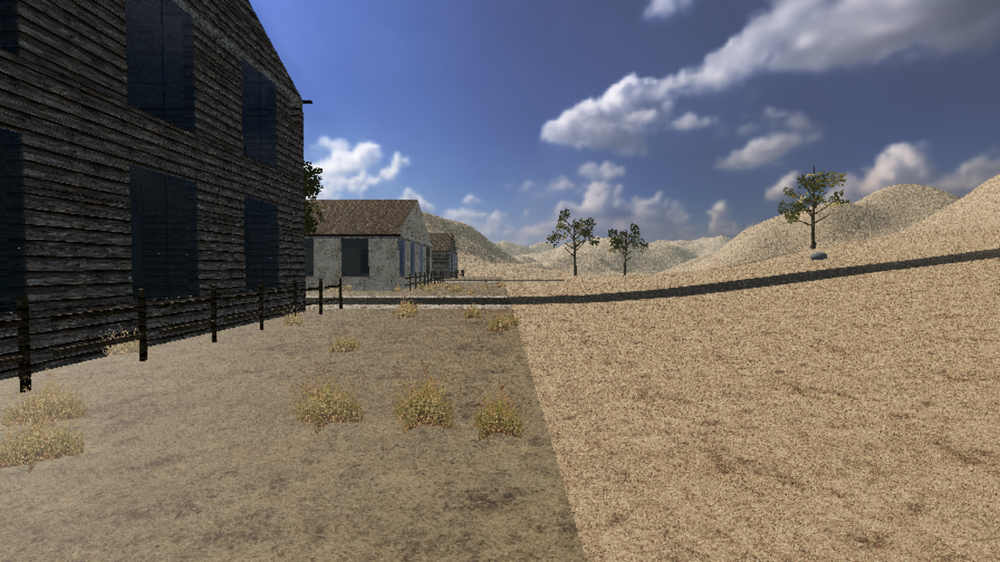
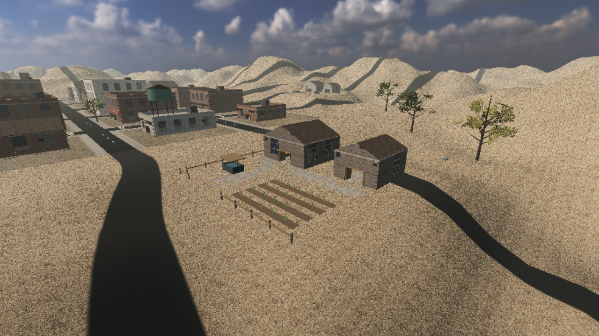

Собственная воксельная игра о выживании с нуля на Godot 4.7 .NET (C#): разрушаемый город «Ржавый Бор» с 34 зданиями, старт без снаряжения и первый крафт, лепка персонажа по 134 ползункам, анимации CMU Motion Capture, локальная погода с грозами, строительство базы и умный ИИ зомби в кооперативе до 8 игроков.
Каждое обновление Deadland с точным списком того, что было сделано, какие механики появились, какие ошибки и узкие места производительности были устранены.
Реальные замеры производительности из отчётов docs/performance/0.20.1.md и docs/performance/0.30.1.md (seed 4242, Godot 4.7 .NET) и исправления геометрии мира.
Кэширование высоты столбца чанка и точечная инвалидация при вскапывании земли или камня.
Соседние плоские грани одного материала и нормали объединяются без потери поблочного разрушения.
Разделение окраин на участки 64×64 м для отсечения камерой и теневыми каскадами + сон невидимых скелетов зомби.
Двухэтапное сокращение: дедупликация вершин/нормалей в 0.20.1 и объединение плоских граней в 0.30.1.
Устранение геометрической щели на отрицательных границах городской сетки и выравнивание примыкания рельефа пустыни.

Переход от ступенчатого воксельного основания вокруг сельских участков к непрерывному гладкому плато с коллизией.

Выживший появляется в мире без снаряжения. Камни, ветки и волокно собираются руками по F, а объёмные модели всех 14 предметов в реальных размерах лежат на широкой грани и удерживаются серединой ладони.
HarvestRules.cs)| Источник в мире | Способ | Время | Выход и запас | Стамина |
|---|---|---|---|---|
| Отдельный камень / валежник / сучья | F (нажатие) |
0,5 с | 1 камень / 1 ветка (объект исчезает) | 0 |
| Сухая ветка на живом дереве | F (удержание) |
1,5 с | 1 ветка (до 2 шт. с дерева) | 5 |
| Волокнистое растение (руками) | F (удержание) |
2,0 с | 1 волокно (куст изорван целиком) | 4 |
| Волокнистое растение (резаком) | Резак, ЛКМ |
0,8 с / шт. | 3 пучка волокна (остаются пеньки) | 4 / шт. |
| Ствол взрослого дерева | Топор, ЛКМ |
9 ударов (~8 с) | Дерево падает (урон 60 ствол / 20 крона) + 2–3 сучка | 7 / удар |
| Поваленное бревно | Топор, ЛКМ |
0,9 с / удар | 1 полено за удар (всего 6 поленьев) | 7 / удар |
| Крона лежащего дерева / кусты / грядки | Резак, ЛКМ |
1,0 с | Листва (4 пучка с верхушки дерева) | 7 |
| Участок почвы (2×2 м) | Копалка, ЛКМ |
1,8 с | 1 земля (запас 6 ед. с участка) | 7 |
| Куча металлолома | F (удержание) |
3,0 с | 1 металлолом (запас 5 ед.) | 7 |
| Создаваемый предмет | Расходуемые материалы | Инструмент (не тратится) |
|---|---|---|
Каменный резак (stone_cutter) |
1 × Камень | Ещё 1 × Камень (как отбойник) |
Шнур (cord) |
3 × Растительное волокно | — (скручивается руками) |
Каменный топор (stone_axe) |
1 × Камень + 1 × Ветка + 1 × Шнур | Каменный резак |
Палка-копалка (digging_stick) |
1 × Ветка | Каменный резак |
B — режим, 0.30.0+)
• Управление: B — включить предпросмотр, R — выбрать семейство материала (Дерево / Камень / Металл), G — переключить действие (Установка / Укрепление ступени / Накладка на грань / Разбор), ЛКМ — выполнить.
• Правило фиксированного материала: каждая основа имеет 2 ступени прочности внутри своего семейства; смена материала требует разбора (топором, с возвратом до 50% ресурсов).
• Защитные накладки: ставятся отдельно на любую из 6 граней блока и первыми принимают на себя удары зомби с этой стороны.
Настоящие внутриигровые кадры из Godot 4.7 и рендеры систем лепки персонажа. Нажмите на любой снимок для полноэкранного просмотра.
Полный реестр спроектированных систем из docs/идеи-механик/ и утверждённой архитектуры одежды первого этапа (docs/одежда-первый-этап.md). Часть идей уже воплощена в коде версий 0.27.0–0.33.0.